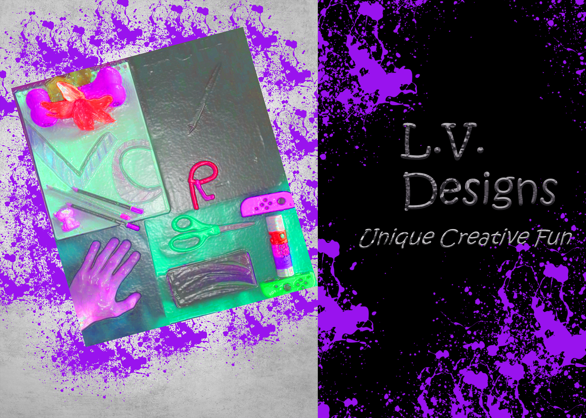

Lori Vadasz
Graphic Designer
My name is Lori Vadasz (pronounced Vey-Dez). I am in my third semester of Graphic Design courses.
I am working on getting my Associates Degree from Wake Technical Community College.
I am a very creative person and have a passion for abstract and unusal work. I enjoy working with bright colors, unique designs and people.
Featured Projects
View selected projects below. More information can be found at L.V. Designs.
Promotional Postcard

For this project, I chose items that I used or inspired me to be a designer.
A few items I used were my dog's chew bone, my digital art pad, a lilly (my favorite flower), and my son's hand.
For the design style, I used a "Grunge" style, using the book BadA Effects by Corey Barker.
I then brightened the colors of the collage image and used a filter to look like plastic wrap,
to make it appear the item was being thrown down onto purple paint, creating the splash effect.
I then used some bevel designs for my name to make it stick out.
Work Experience
Pharmacy Technician
South Florida IT Staffing
Date Started: 06/28/2019
Date Ended: 08/28/2019
Responsible for:
- Filling Prescription Medication
- Calling patients to verify insurance
- Entering patient information into system
- Preparing prescritons to be mailed
Pharmacy Technician
Aerotek
Date Started: 10/01/2018
Date Ended: 11/15/2018
Responsible for:
- Taking incoming calls from doctors and pharmacies
- Providing override codes for pharmacies
- Paperwork to request Medicare overrides
- Making sure Medicare guidelines are being followed
Lead Pharmacy Technician
Care Services
Date Started: 9/01/2017
Date Ended: 05/27/18
Responsible for:
- Taking incoming calls from nursing homes
- Giving nursing homes authorization codes for control substances
- Sending prescription refills to 24 hour pharmacy after hours
- Coordinating delivery of medications to nursing home
Education
Wake Technical Community College - Raleigh, NC
Advertising and Graphic Arts Associates Degree - proposed graduation 05/2022
Invited into the National Society of Leadership and Success.
Wake Technical Community College - Raleigh, NC
Pharmacy Technology Associates Degree - Graduation 05/2015
Invited into the National Society of Leadership and Success, Completed clinicals at Wake Med Hospital, Rex Hospital, Walgreens and Kerr Long Term Care.
Warsaw Community High School, Warsaw, IN
Liberal Arts Major - Graduation 06/1996
Invited into the National Society of Leadership and Success, Completed clinicals at Wake Med Hospital, Rex Hospital, Walgreens and Kerr Long Term Care.